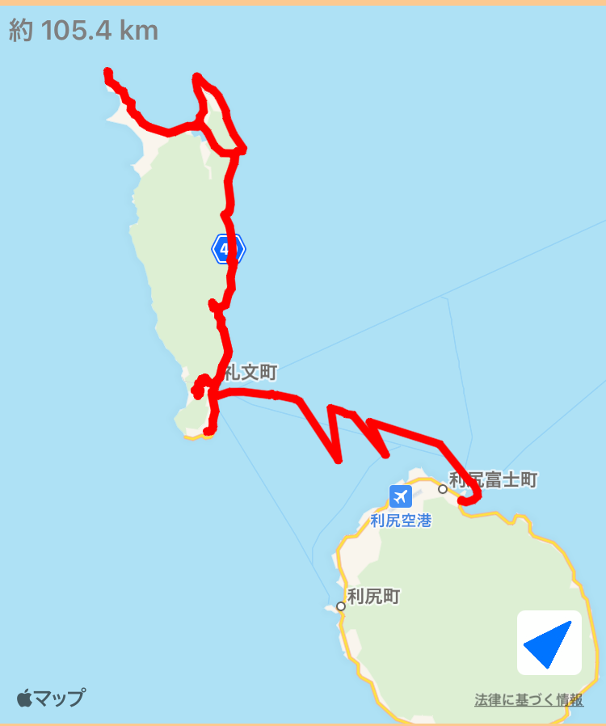

~15日目~
7/16 函館⇨洞爺湖
~16日目~
7/17 洞爺湖⇨室蘭⇨支笏湖
~17日目~
7/18 支笏湖⇨苫小牧⇨札幌
~18日目~
7/19 札幌⇨夕張⇨美瑛
~20日目~
7/21 富良野⇨静内
~21日目~
7/22 静内⇨襟裳岬⇨晩成温泉

~22日目~
7/23 晩成温泉⇨帯広
~23日目~
7/24 帯広⇨釧路
~24日目~
7/25 釧路⇨摩周湖⇨阿寒湖
~25日目~
7/26 阿寒湖⇨根室
~26日目~
7/27 根室⇨羅臼
~27日目~
7/28 羅臼⇨網走⇨北見
~28日目~
7/29 北見⇨枝幸
~29日目~
7/30 枝幸⇨稚内⇨利尻島

~30日目~
7/31 利尻島⇨礼文島